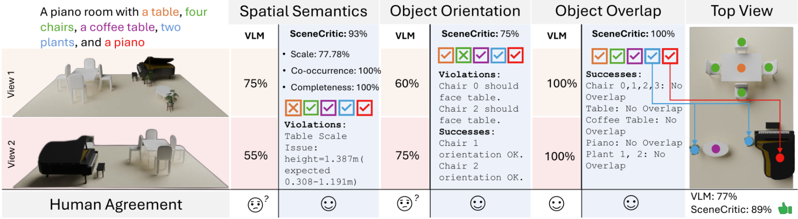
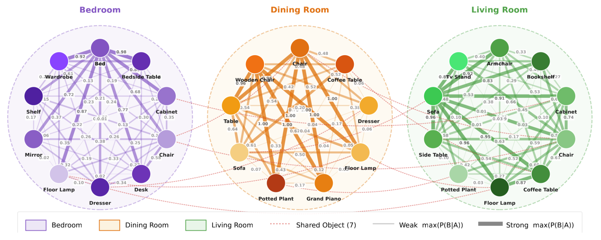
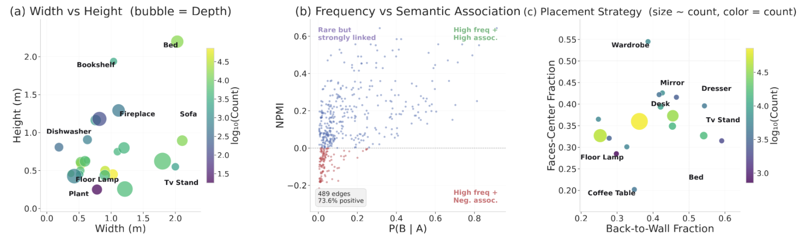
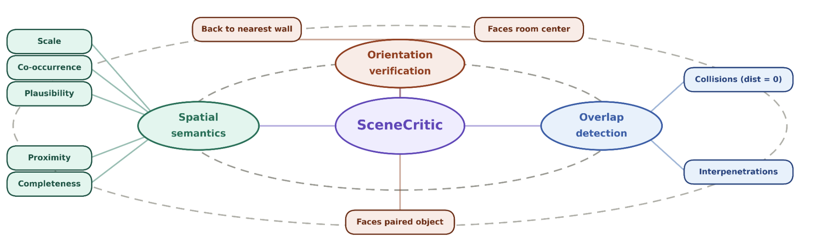
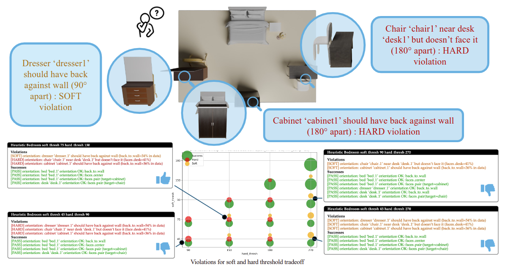
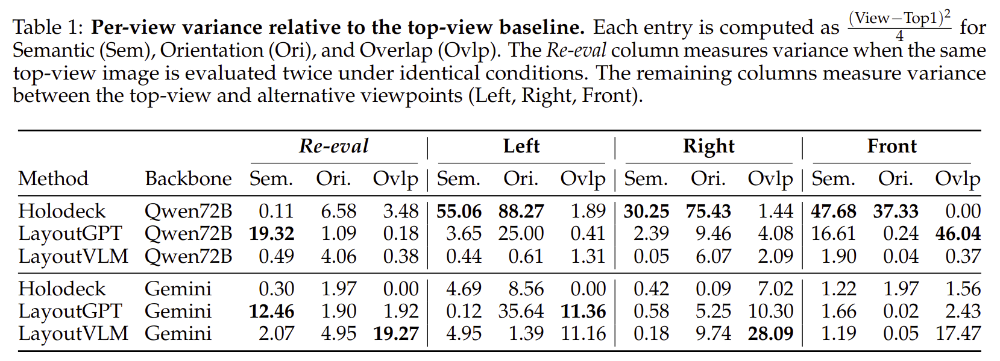
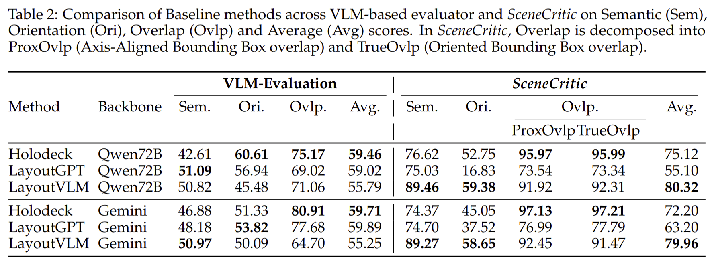
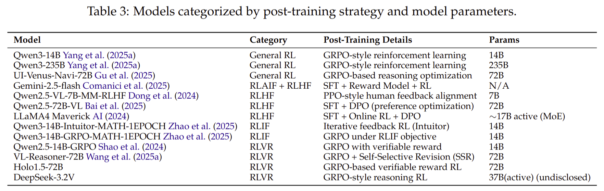
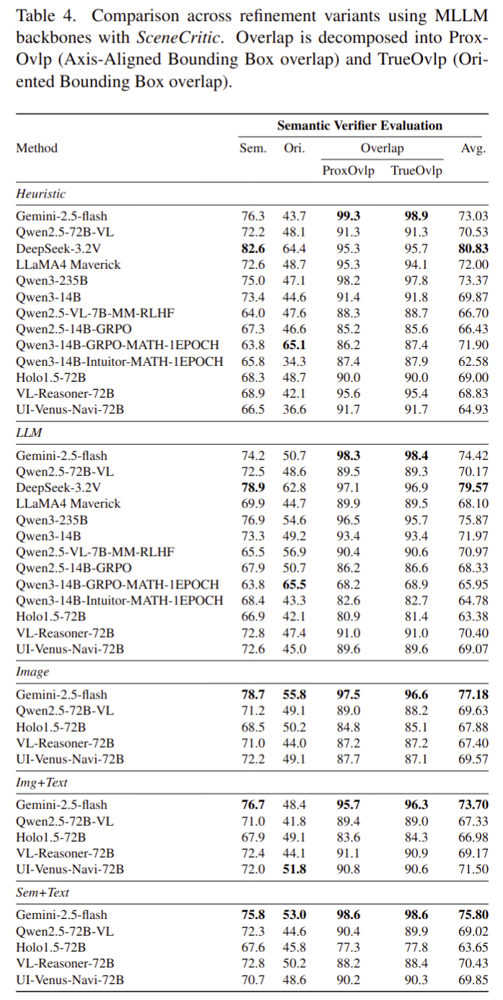

Large Language Models (LLMs) and Vision-Language Models (VLMs) increasingly generate indoor scenes through intermediate structures such as layouts and scene graphs, yet evaluation still relies on LLM or VLM judges that score rendered views, making judgments sensitive to viewpoint, prompt phrasing, and hallucination. When the evaluator is unstable, it becomes difficult to determine whether a model has produced a spatially plausible scene or whether the output score reflects the choice of viewpoint, rendering, or prompt. We introduce SceneCritic, a symbolic evaluator for floor-plan-level layouts. SceneCritic's constraints are grounded in SceneOnto, a structured spatial ontology we construct by aggregating indoor scene priors from 3D-FRONT, ScanNet, and Visual Genome. SceneCritic traverses this ontology to jointly verify semantic, orientation, and geometric coherence across object relationships, providing object-level and relationship-level assessments that identify specific violations and successful placements. Furthermore, we pair SceneCritic with an iterative refinement test bed that probes how models build and revise spatial structure under different critic modalities: a rule-based critic using collision constraints as feedback, an LLM critic operating on the layout as text, and a VLM critic operating on rendered observations. Through extensive experiments, we show that (a) SceneCritic aligns substantially better with human judgments than VLM-based evaluators, (b) text-only LLMs can outperform VLMs on semantic layout quality, and (c) image-based VLM refinement is the most effective critic modality for semantic and orientation correction.

Our motivation is to solve the research question: Are VLM evaluators robust to hallucinations and prompt-phrasing? Can VLM-evaluators handle view-bias? Is Human Evaluation the solution? The follow-up question is: Are Human evaluations scalable? We are excited to present SceneCritic, a symbolic evaluator for floor-plan-level layouts grounded in SceneOnto data.



We ground the hyperparameter tuning in Procthor-10K dataset, a procedurally generated 3D scene dataset. We verify the hyperparameters by comparing human analysis with evaluation by SceneCritic with Procthor grounded hyperparameters. The figure above shows a typical room analysis.



Human Evaluators Agreement

